How to Capture Network Traffic on a Kubernetes Cluster Node with TCPDump
When managing a Kubernetes cluster, there are times when you need to diagnose network issues or analyze traffic patterns. One powerful tool for this task is tcpdump, a command-line packet analyzer that is invaluable for troubleshooting network issues. In this blog post, we'll walk through a proof of concept for capturing network traffic on a Kubernetes cluster node using tcpdump and pulling the capture files back to a jump host for further analysis.
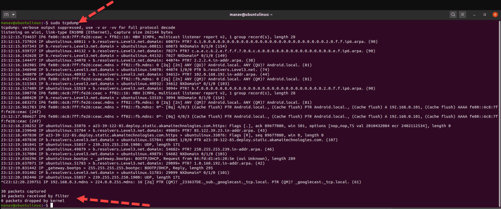
Step-by-Step Guide to Running TCPDump on a Cluster Node
1. Obtain the Interface ID on the Pod
First, you need to find out which network interface on your Kubernetes pod is connected to the cluster network. This is usually the eth0 interface. To get the interface ID, open a terminal on the pod and run:
cat /sys/class/net/eth0/iflink
To be able to do this we need to turn on the CRC first that has space for testing as well
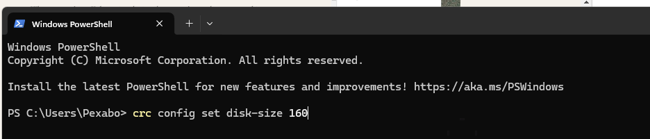
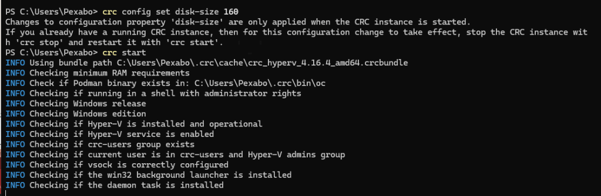
Turning on the cluster
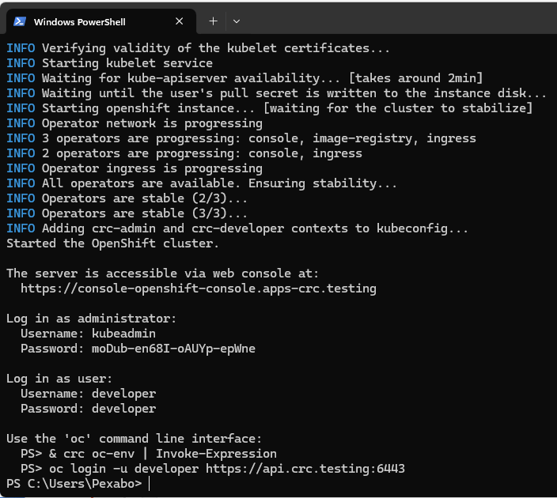
Check the machine on HyperV
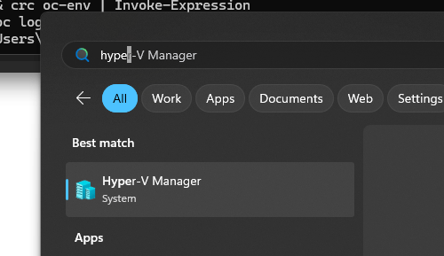
This command will output a number that corresponds to the interface ID.
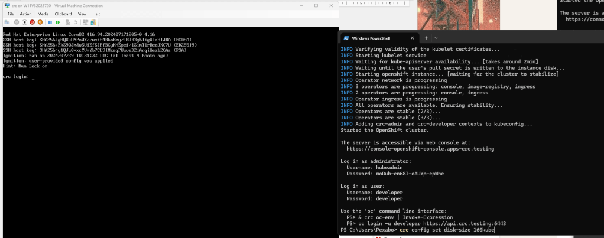
I cant login directly to CRC VM but maybe that is not needed
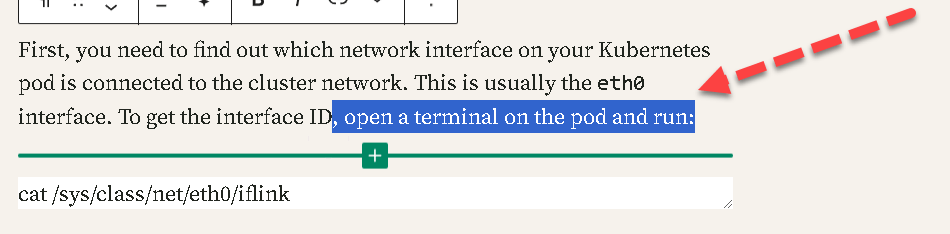
Add this to lastpass and open the web interface
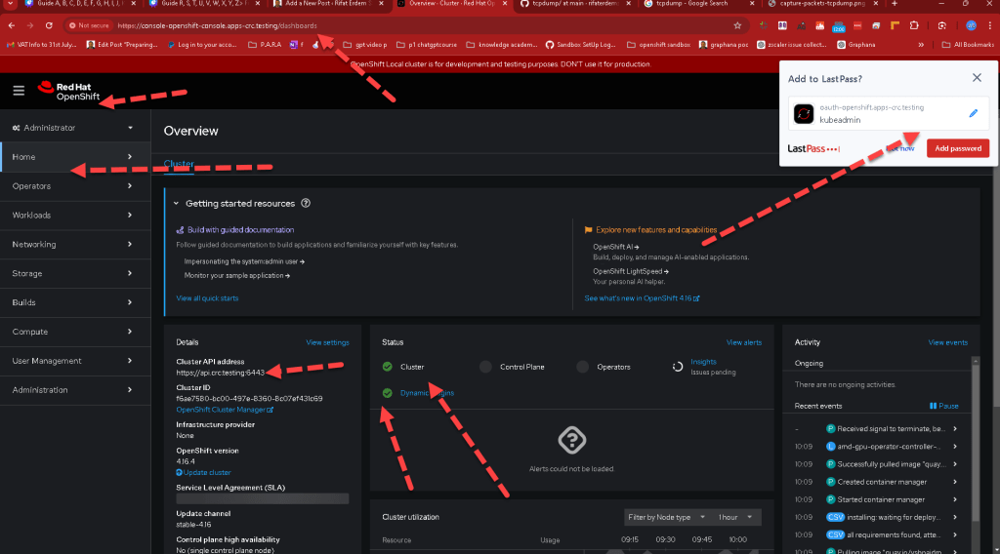
FIND THE RUNNING STATE PODS FOR THE POC
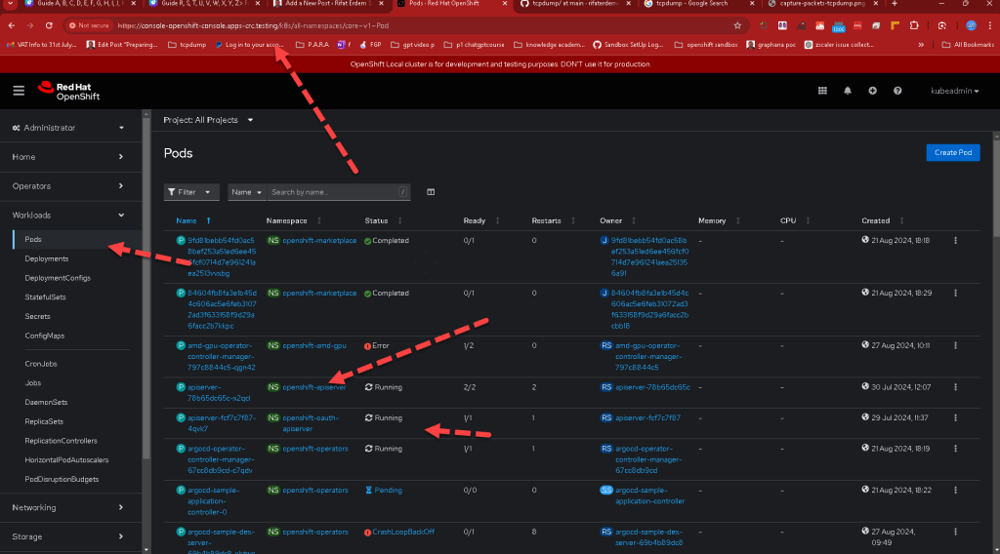
check it with the webinterface thanks to openshift crc
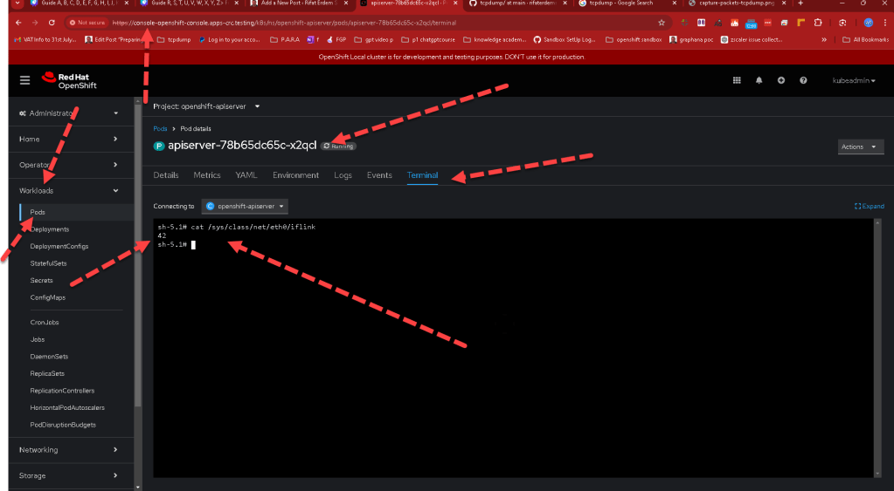
lol we got the universal answer from the hickers guide to galaxy
The command cat /sys/class/net/eth0/iflink is used to read the contents of the file /sys/class/net/eth0/iflink in Linux.
Explanation:
-
/sys/class/net/eth0/iflink: This is a file in the Linux/sysfilesystem, which is a virtual filesystem providing information about the kernel, hardware, and system processes. The path/sys/class/net/eth0/corresponds to the network interfaceeth0. -
iflink: This file contains a number that represents the "interface index" of the physical or virtual network interface. The interface index is a unique identifier for each network interface in the kernel. -
Output
42: The number42is the interface index foreth0. This index can be used by programs and scripts to uniquely identify network interfaces. -
^C: This represents the user pressingCtrl+C, which interrupts or cancels the current command in the terminal.
Summary:
The command cat /sys/class/net/eth0/iflink outputs the interface index of the eth0 network interface, which in this case is 42. The user then canceled the next action by pressing Ctrl+C.
2. Identify the Worker Node
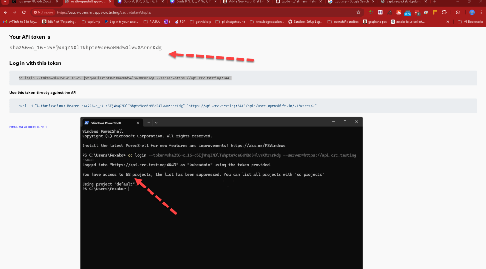
Next, determine which worker node your pod is running on. This can typically be done by using the Kubernetes command-line tool kubectl:
kubectl get pod
kubectl get pod apiserver-78b65dc65c-x2qcl -o wide
Look for the node name in the output. This tells you the worker node where your pod is running.
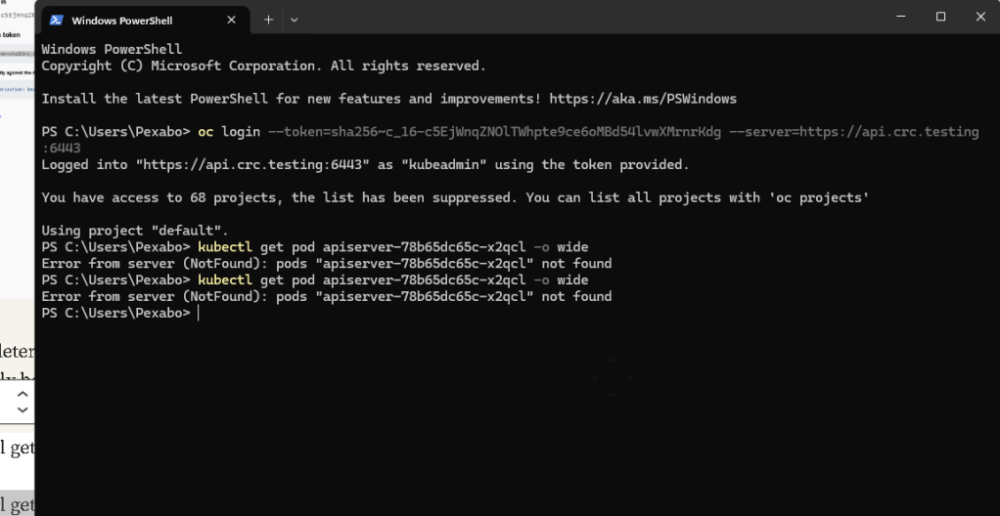
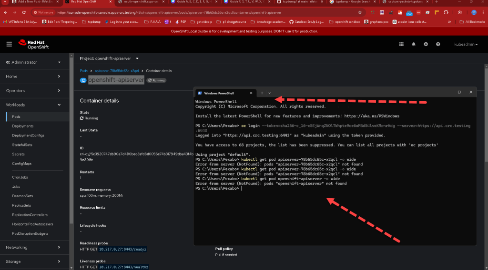
oc version might be needed
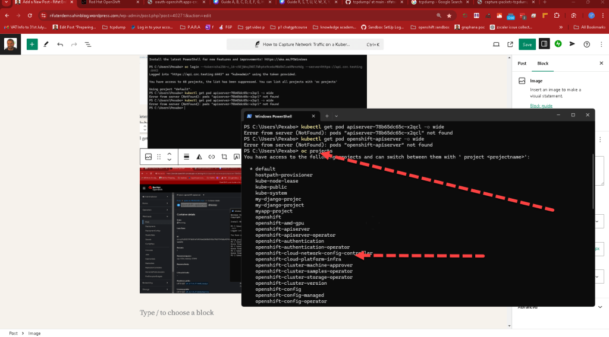
To run the equivalent command for OpenShift to get detailed information about a pod (similar to kubectl get pod <pod-name> -o wide in Kubernetes), you can use the oc command-line tool, which is specifically designed for OpenShift.
Here’s the OpenShift command:
oc get pod apiserver-78b65dc65c-x2qcl -o wide
This command will provide you with an output similar to the Kubernetes kubectl get pod -o wide, showing detailed information about the specified pod.
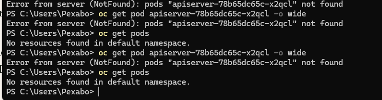
To get a list of all pods across all namespaces in OpenShift, you can use the oc command with the --all-namespaces flag. Here’s the command:
oc get pods --all-namespaces
If you want more detailed information (like the -o wide option in Kubernetes), you can add that flag as well:
oc get pods --all-namespaces -o wide
These commands will list all pods across all namespaces with additional details like the node they are running on, IP addresses, and more.
maybe it is the access issue select another pod
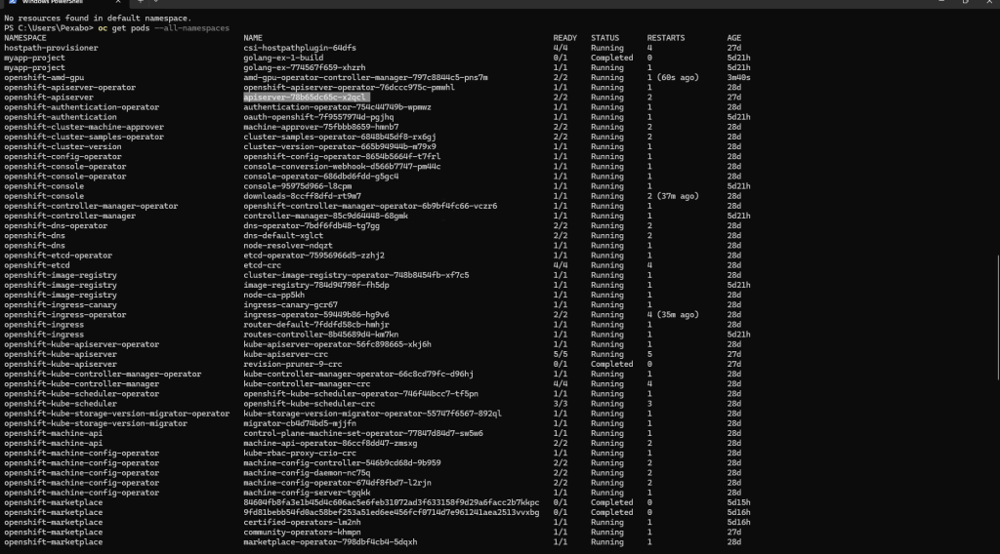
both are not found
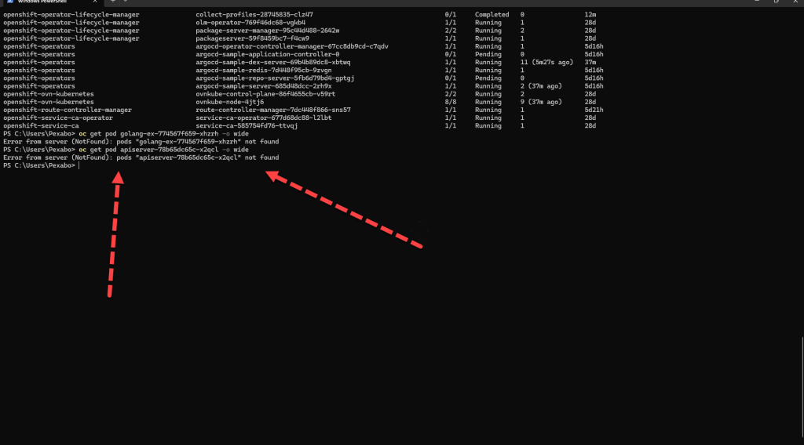
GPT FOR HElP
The errors you're encountering (Error from server (NotFound)) suggest that the oc command is unable to locate the specified pods. This can happen due to a couple of reasons:
-
Namespace Context: The command
oc get pod <pod-name> -o widewithout specifying a namespace will look for the pod in the current namespace context. Sincegolang-ex-774567f659-xhzrhis in themyapp-projectnamespace andapiserver-78b65dc65c-x2qclis in theopenshift-apiservernamespace, you need to specify the correct namespace. -
Command Syntax: When looking for a specific pod in a specific namespace, you should add the
-nflag followed by the namespace name.
Correct Commands:
To retrieve detailed information about the golang-ex-774567f659-xhzrh pod in the myapp-project namespace:
oc get pod golang-ex-774567f659-xhzrh -n myapp-project -o wide
To retrieve detailed information about the apiserver-78b65dc65c-x2qcl pod in the openshift-apiserver namespace:
oc get pod apiserver-78b65dc65c-x2qcl -n openshift-apiserver -o wide
Explanation:
-
-n myapp-project: Specifies the namespacemyapp-projectwhere the podgolang-ex-774567f659-xhzrhis located. -
-n openshift-apiserver: Specifies the namespaceopenshift-apiserverwhere the podapiserver-78b65dc65c-x2qclis located.
Using the correct namespace ensures that the oc command searches for the pods in the appropriate location.
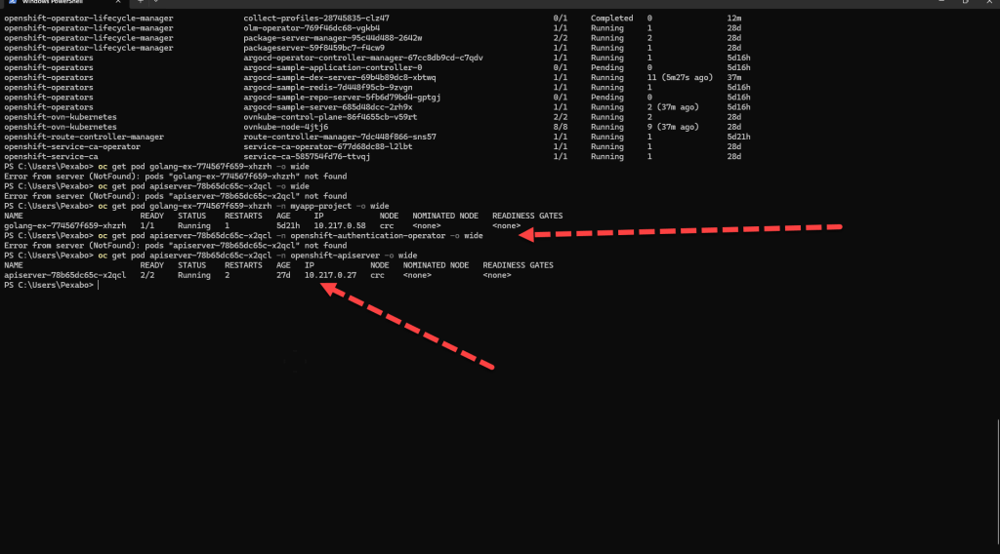
NAME READY STATUS RESTARTS AGE IP NODE NOMINATED NODE READINESS GATES
apiserver-78b65dc65c-x2qcl 2/2 Running 2 27d 10.217.0.27 crc <none> <none>
3. Get the veth ID on the Worker Node
Now that you know the worker node, you need to find the corresponding virtual Ethernet (veth) interface ID on that worker node. Open a terminal on the worker node and run:
ip a | grep
ip a | grep 42
Replace <interface_id_no> with the interface ID number obtained in step 1. This command will return the veth interface associated with your pod's network interface. Make sure to exclude the @ suffix from the veth interface ID.
pod terminal and node terminal are not the same many layers of inception
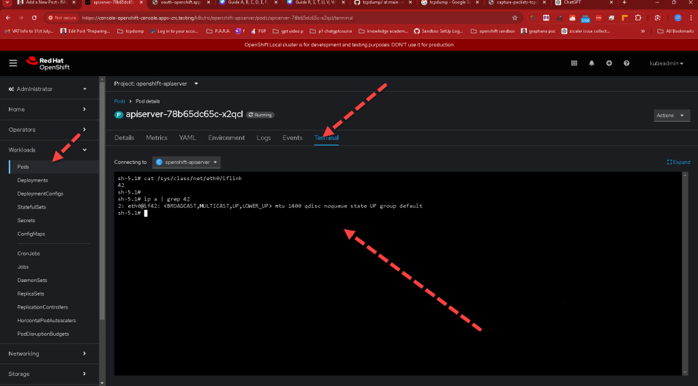
crc login needs to be resolved
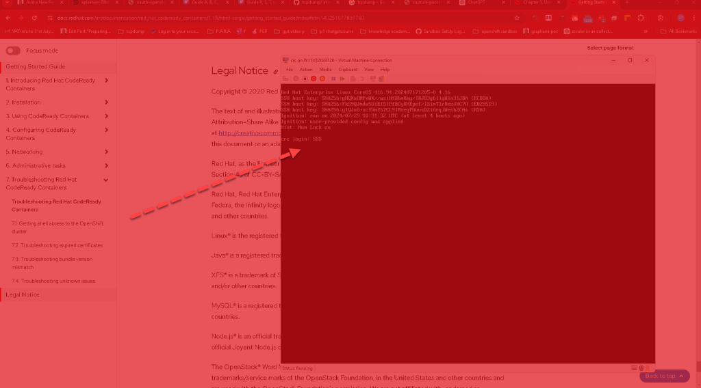
To access the terminal of a node (such as the control plane node) in your CodeReady Containers (CRC) OpenShift environment, you need to connect to the OpenShift cluster using the OpenShift command-line interface (oc). Here's how you can do it:
1. Ensure CRC is Running
Before accessing the node's terminal, make sure your CRC instance is up and running:
crc start
If CRC is already running, it will confirm that the OpenShift cluster is running.
2. Log in to the OpenShift Cluster via CLI
Use the OpenShift CLI (oc) to log in. The credentials and API server URL were provided in the output when you started CRC. The typical login command looks like this:
oc login -u kubeadmin -p
Replace <password> with the kubeadmin password provided when you started CRC.
3. Get Node Information
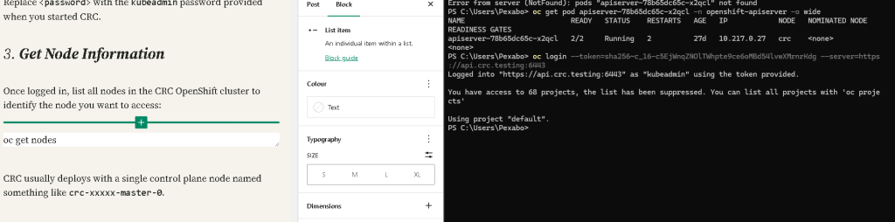
Once logged in, list all nodes in the CRC OpenShift cluster to identify the node you want to access:
oc get nodes
CRC usually deploys with a single control plane node named something like crc-xxxxx-master-0.
only one node that normal
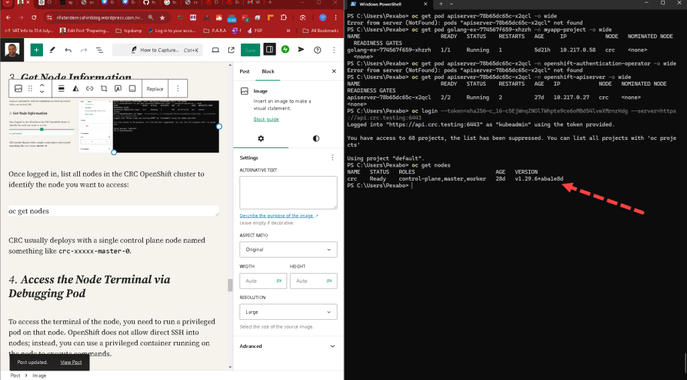
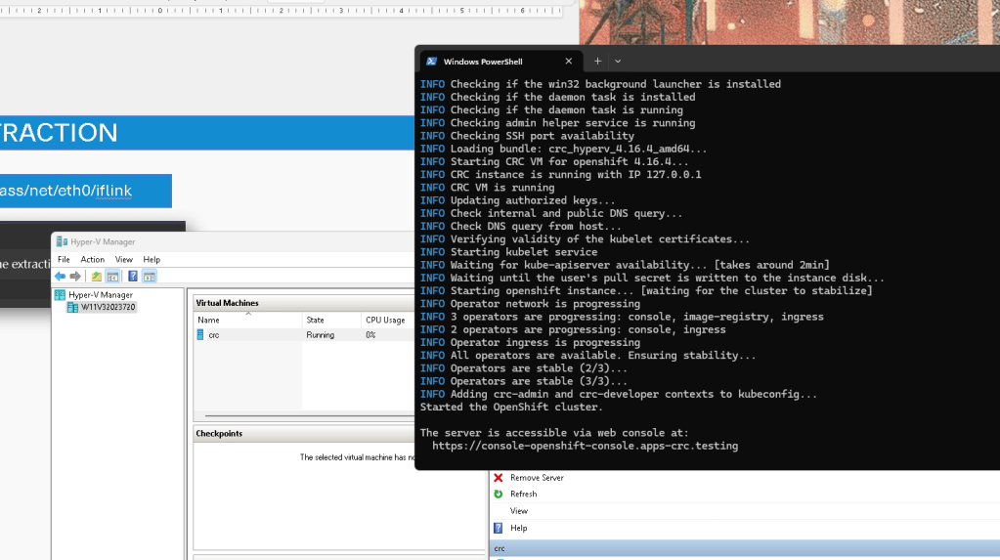
PS C:\Users\Pexabo> oc get nodes
NAME STATUS ROLES AGE VERSION
crc Ready control-plane,master,worker 28d v1.29.6+aba1e8d
PS C:\Users\Pexabo>
4. Access the Node Terminal via Debugging Pod
To access the terminal of the node, you need to run a privileged pod on that node. OpenShift does not allow direct SSH into nodes; instead, you can use a privileged container running on the node to execute commands.
Step-by-step Instructions:
- Create a Debugging Pod: Run a debug session with a new pod that has privileged access to the node:
oc debug node/
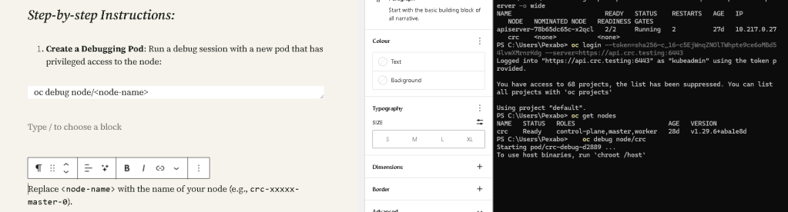
hyper v not needed thatn
Replace <node-name> with the name of your node (e.g., crc-xxxxx-master-0).
This command will create a new debug pod and attach you to its terminal. The output will look like this:
Starting pod/
If you don't see a command prompt, try pressing enter.
- Enter the Node’s Shell: You are now in a debug pod that has privileged access. To enter the shell environment of the node, you can use
chroot:
chroot /host
This command changes your root to the node's file system, effectively giving you terminal access to the node's environment.
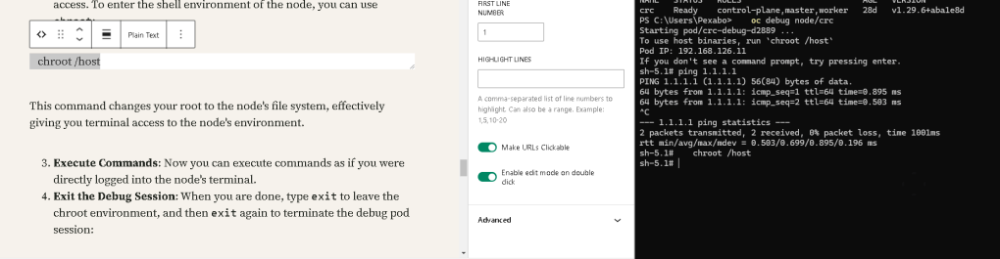
-
Execute Commands: Now you can execute commands as if you were directly logged into the node's terminal.
-
Exit the Debug Session: When you are done, type
exitto leave the chroot environment, and thenexitagain to terminate the debug pod session:
exit
exit
5. Stop the CRC Instance (Optional)
If you're done with the CRC session and want to free up system resources:
crc stop
Important Notes:
-
Root Access: The above steps provide root access to the node’s filesystem. Be cautious with commands that could affect your CRC instance.
-
Security Context: The debug pod runs with elevated privileges. It is recommended to only use this access for debugging purposes and not for routine tasks.
-
Cluster Constraints: CRC runs a minimal OpenShift cluster on your local machine. There are constraints on available resources, and operations that are too resource-intensive may fail.
This method allows you to interact directly with the node running within your CRC environment, providing access to the underlying operating system for troubleshooting and debugging.
4. Start TCPDump on the Worker Node
With the veth interface ID in hand, you're ready to start capturing network traffic. Run the following command on the worker node to start a tcpdump session:
tcpdump -i
tcpdump -i 42 -w /host/var/tmp/mydebug.pcap
Replace <veth_interface_id> with the actual interface ID and <file_name> with a descriptive name for your capture file. This command will begin capturing packets and writing them to a .pcap file in the /host/var/tmp/ directory on the worker node. Allow the tcpdump session to run for 5-10 minutes to capture sufficient data.
rtt min/avg/max/mdev = 0.503/0.699/0.895/0.196 ms
sh-5.1# chroot /host
sh-5.1# tcpdump -i 42 -w /host/var/tmp/mydebug.pcap
sh: tcpdump: command not found
sh-5.1#
The error message sh: tcpdump: command not found indicates that the tcpdump command is not available in your current environment. Here are some steps you can take to resolve this issue:
-
Install
tcpdump: Iftcpdumpis not installed in your environment, you will need to install it. The command to install it depends on your Linux distribution. Here are the commands for common distributions: -
Debian/Ubuntu:
apt-get update && apt-get install tcpdump -
Red Hat/CentOS/Fedora:
yum install tcpdumpordnf install tcpdump -
Arch Linux:
pacman -S tcpdump
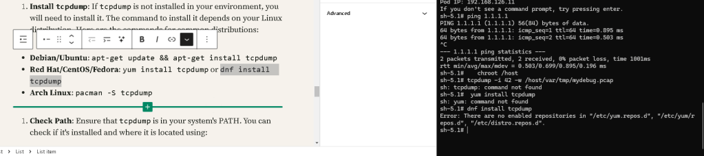
The error message Error: There are no enabled repositories in "/etc/yum.repos.d", "/etc/yum/repos.d", "/etc/distro.repos.d". indicates that dnf (the package manager for Fedora/RHEL-based distributions) is unable to find any enabled repositories to download the tcpdump package from. This usually happens if the repository configuration files are missing, corrupted, or not enabled.
Here’s how you can resolve this issue:
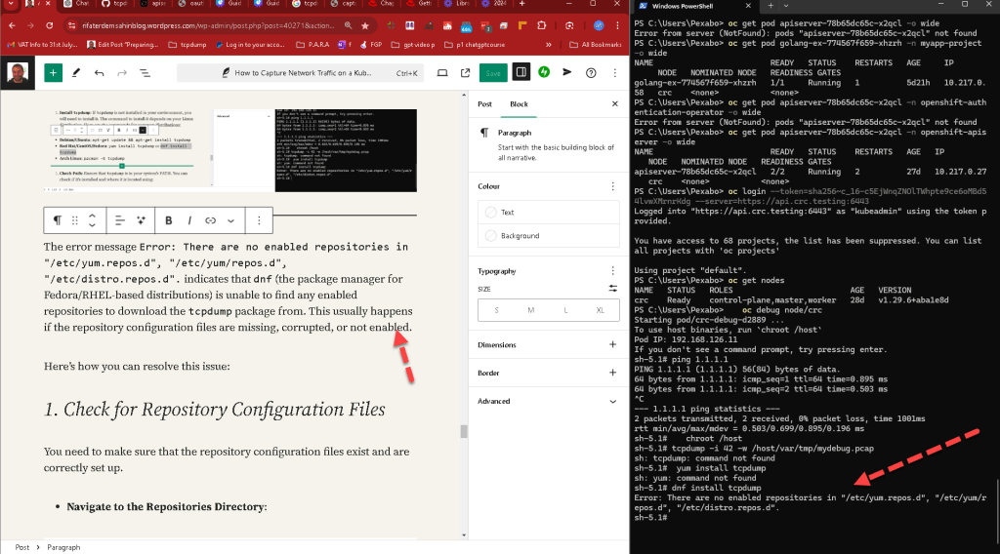
1. Check for Repository Configuration Files
You need to make sure that the repository configuration files exist and are correctly set up.
- Navigate to the Repositories Directory:
cd /etc/yum.repos.d/
- List the Available Repositories:
ls -l
If this directory is empty or the necessary .repo files are missing, you'll need to add them.
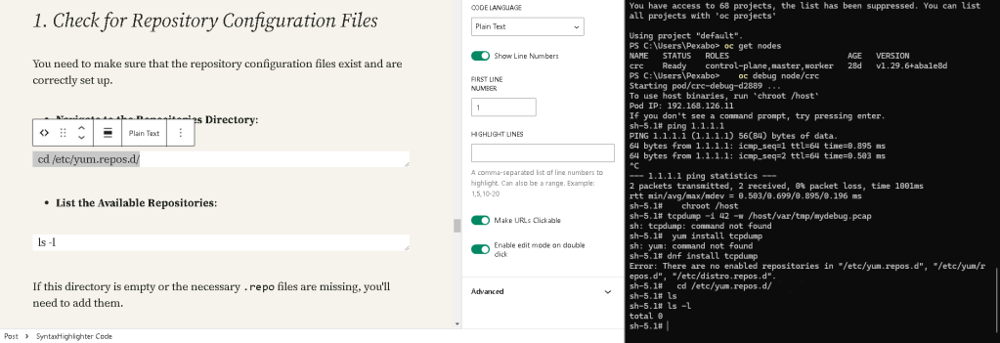
2. Enable Repositories
If the .repo files are present but the repositories are not enabled, you can enable them by editing the files. Look for files ending in .repo and ensure they have an enabled line set to 1.
- Edit the Repository Files:
Open each.repofile in a text editor (likeviornano):
vi /etc/yum.repos.d/[repository-name].repo
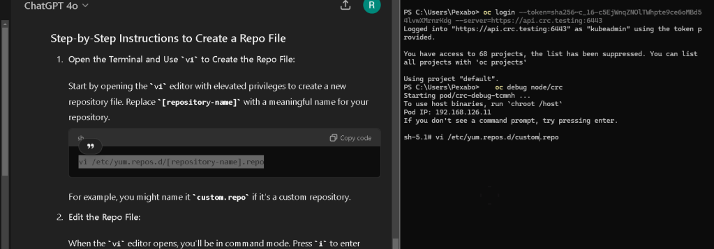
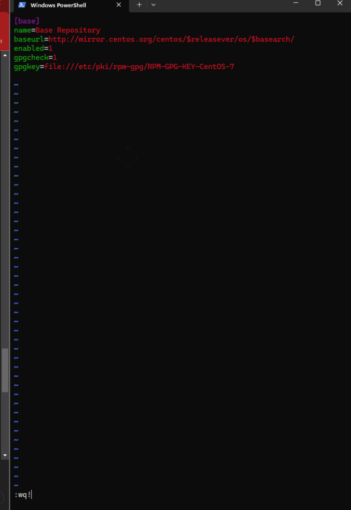
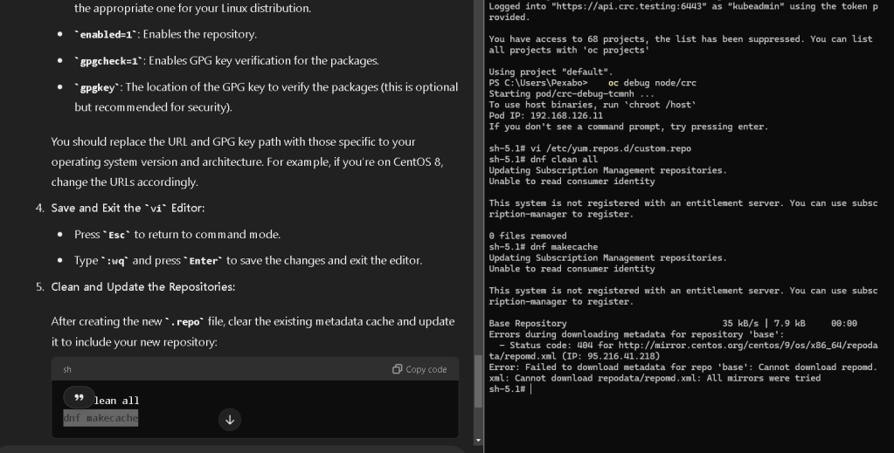
- Ensure the Repository is Enabled:
Make sure there’s a line that saysenabled=1.
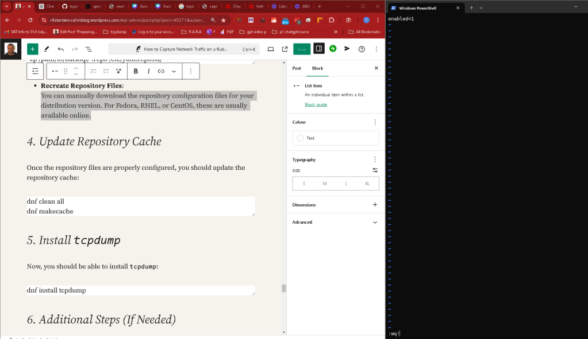
yum is the name
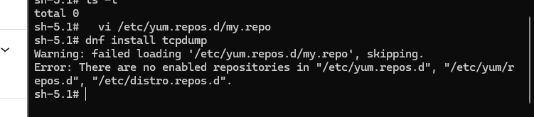
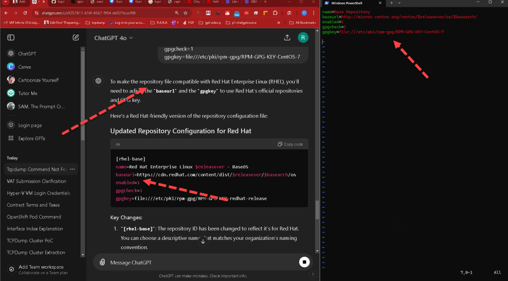
Redhat friendly
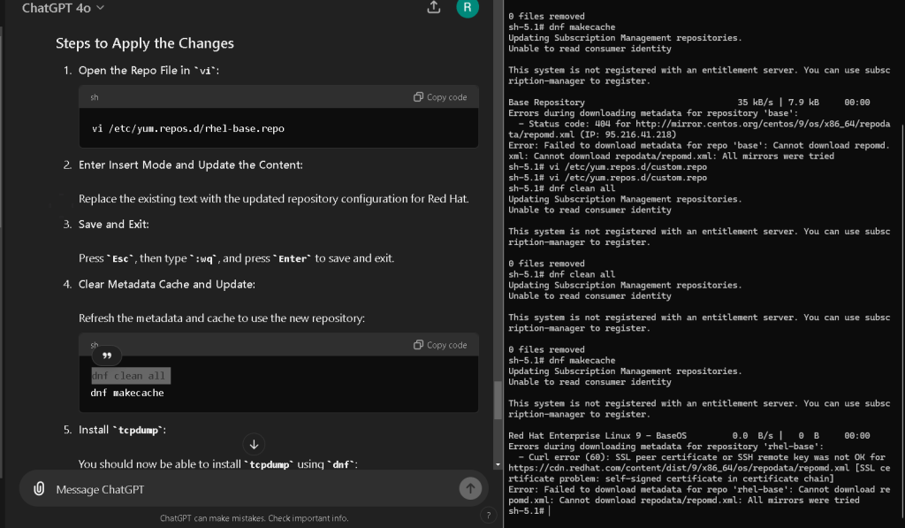
`pomd.xml: Cannot download repodata/repomd.xml: All mirrors were tried
sh-5.1# dnf install tcpdump
Updating Subscription Management repositories.
Unable to read consumer identity
This system is not registered with an entitlement server. You can use subscription-manager to register.
Red Hat Enterprise Linux 9 - BaseOS 0.0 B/s | 0 B 00:00
Errors during downloading metadata for repository 'rhel-base':
- Curl error (60): SSL peer certificate or SSH remote key was not OK for https://cdn.redhat.com/content/dist/9/x86_64/os/repodata/repomd.xml [SSL certificate problem: self-signed certificate in certificate chain]
Error: Failed to download metadata for repo 'rhel-base': Cannot download repomd.xml: Cannot download repodata/repomd.xml: All mirrors were tried`
The error message you're encountering indicates a few issues that need to be addressed for proper access to Red Hat's repositories on your RHEL 9 system. Let's go through the solutions step-by-step:
1. Register the System with Red Hat
To access Red Hat repositories and download packages, your system needs to be registered with Red Hat Subscription Management (RHSM). Here's how to register your system:
a. Register with Subscription Manager
Run the following command and replace <your-username> and <your-password> with your Red Hat account credentials:
subscription-manager register --username
If you are using an activation key and organization ID instead, the command is:
Register with a proper echo and rerun
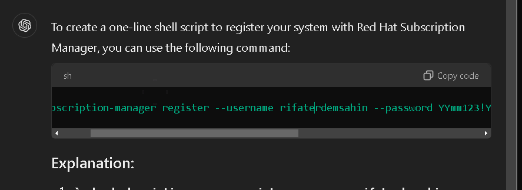
roconnect
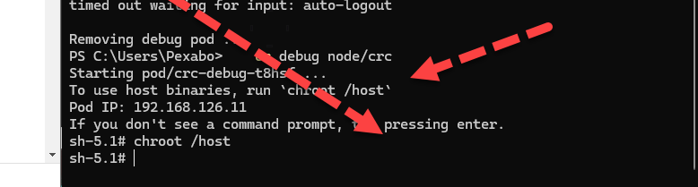
subscription-manager register --activationkey=
b. Attach a Subscription
Once registered, you need to attach a subscription. You can attach all available subscriptions using:
subscription-manager attach --auto
Or, to list available subscriptions and attach a specific one:
subscription-manager list --available
subscription-manager attach --pool=
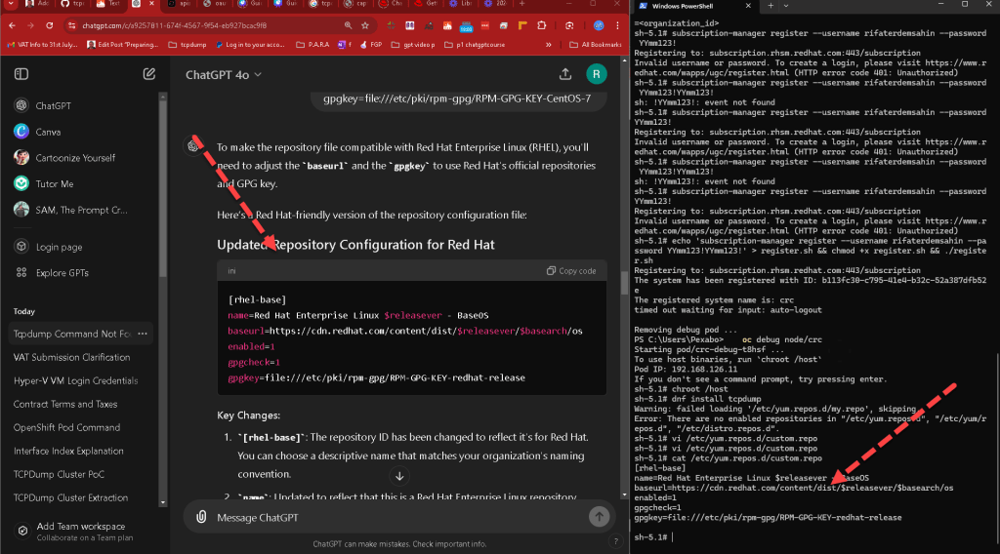
2. Enable the Required Repositories
After registering and attaching a subscription, you need to enable the repositories you require, such as BaseOS and AppStream. You can list all available repositories and enable them as needed:
subscription-manager repos --list
subscription-manager repos --enable=rhel-9-for-x86_64-baseos-rpms
subscription-manager repos --enable=rhel-9-for-x86_64-appstream-rpms
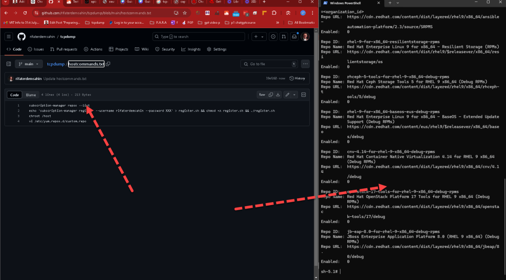
3. Fix the SSL Certificate Issue
The SSL certificate error (SSL certificate problem: self-signed certificate in certificate chain) indicates that there is a problem with the SSL certificate on the Red Hat CDN URL.
a. Update CA Certificates
Ensure your system’s CA certificates are up to date. Run:
dnf update ca-certificates
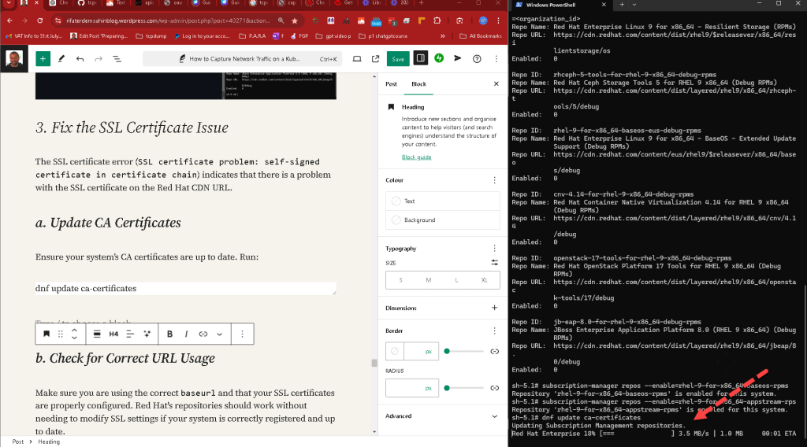
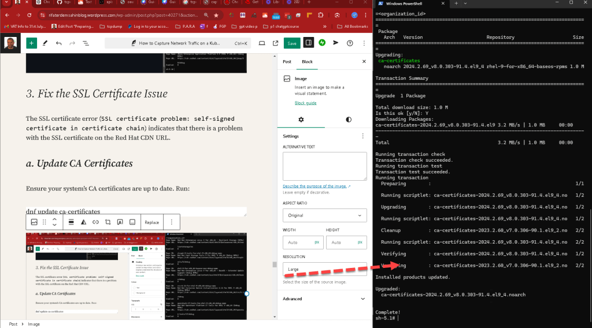
b. Check for Correct URL Usage
Make sure you are using the correct baseurl and that your SSL certificates are properly configured. Red Hat's repositories should work without needing to modify SSL settings if your system is correctly registered and up to date.
c. Check the System Date and Time
SSL certificates are time-sensitive. Ensure your system clock is correctly set, as incorrect time settings can cause SSL validation errors.
timedatectl status
If the time is incorrect, you can update it using:
timedatectl set-time "YYYY-MM-DD HH:MM:SS"
4. Clean and Rebuild DNF Cache
After you have registered, attached a subscription, and enabled repositories, clean up and rebuild the DNF cache:
dnf clean all
dnf makecache
5. Try Installing tcpdump Again
Once the system is registered, subscriptions are attached, repositories are enabled, and the SSL issue is resolved, try installing tcpdump again:
dnf install tcpdump
Summary
-
Register your system with Red Hat using
subscription-manager. -
Attach a subscription to access the repositories.
-
Enable the necessary repositories using
subscription-manager repos. -
Update CA certificates and verify SSL settings.
-
Ensure your system’s date and time are correct.
-
Clean and rebuild the DNF cache.
-
Install the desired package.
Following these steps should resolve the issues and allow you to successfully install tcpdump on your RHEL system. Let me know if you need further assistance!
3. Restore Default Repository Files
If the repository files are missing, you can restore them from a backup or manually create them.
- Restore from Backup (if you have one):
cp /path/to/backup/*.repo /etc/yum.repos.d/
- Recreate Repository Files:
You can manually download the repository configuration files for your distribution version. For Fedora, RHEL, or CentOS, these are usually available online.
4. Update Repository Cache
Once the repository files are properly configured, you should update the repository cache:
dnf clean all
dnf makecache
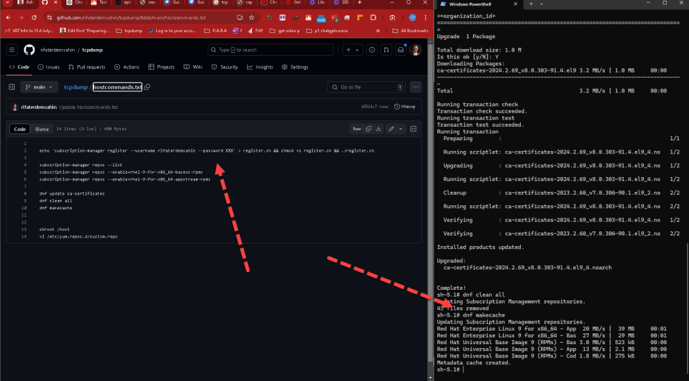
5. Install tcpdump
Now, you should be able to install tcpdump:
dnf install tcpdump
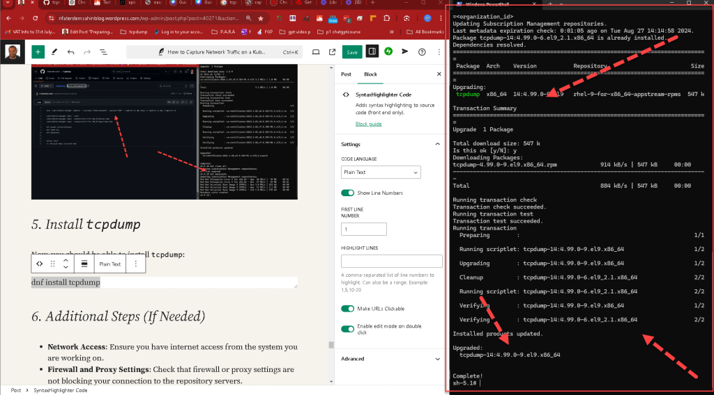
6. Additional Steps (If Needed)
-
Network Access: Ensure you have internet access from the system you are working on.
-
Firewall and Proxy Settings: Check that firewall or proxy settings are not blocking your connection to the repository servers.
If you still encounter issues, consider checking the system’s specific documentation or contacting your system administrator for more detailed assistance with repository configuration.
- Check Path: Ensure that
tcpdumpis in your system's PATH. You can check if it's installed and where it is located using:
which tcpdump
or
whereis tcpdump
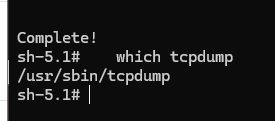
If it is installed but not in your PATH, you may need to add its location to your PATH variable.
-
Run
tcpdumpin the Correct Environment: Since you're usingchroot, the environment you're running in might not have access totcpdumpif it isn't installed within the chroot environment itself. You may need to installtcpdumpinside the chroot environment as well. -
Use Correct Interface: The command
tcpdump -i 42specifies an interface number that may not be valid. Normally, interfaces are specified by name (e.g.,eth0,enp3s0). You should determine the correct interface by using theip aorifconfigcommand and then specify the appropriate interface name in thetcpdumpcommand. -
Run with Root Privileges:
tcpdumptypically requires root privileges. Make sure you are running the command with the appropriate permissions. -
Check Network Namespace: If you're working within a containerized environment, the network namespace might differ from the host. Ensure that
tcpdumpis executed within the correct namespace or container environment.
Here's an example of a corrected tcpdump command after ensuring tcpdump is installed and you are in the correct environment:
tcpdump -i eth0 -w /host/var/tmp/mydebug.pcap
tcpdump -i 42 -w /host/var/tmp/mydebug2.pcap
Replace eth0 with the appropriate interface name for your situation. If you still face issues, double-check the environment setup and permissions.
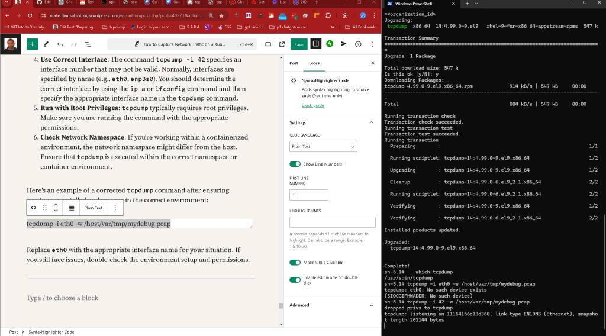
5. Pull the .pcap File to the Jump Host
Once the capture is complete, you need to transfer the .pcap file to your jump host for analysis. From the jump host, log onto the cluster and use the following command to pull the file:
oc debug node/
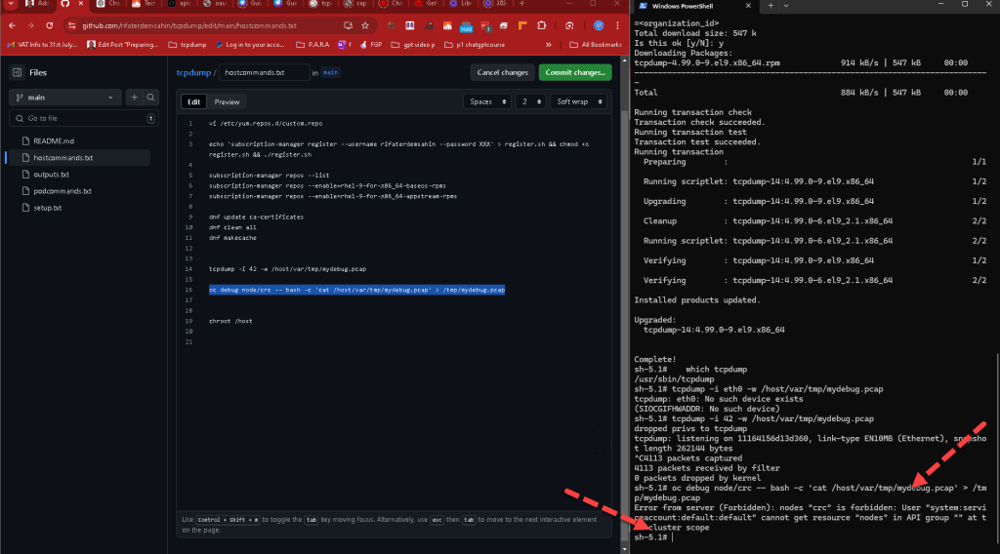
Replace <worker_node> with the name of the worker node and <file_name> with the name of your capture file. This command uses OpenShift's oc debug to execute a command on the worker node and then redirects the output to a local file on the jump host.
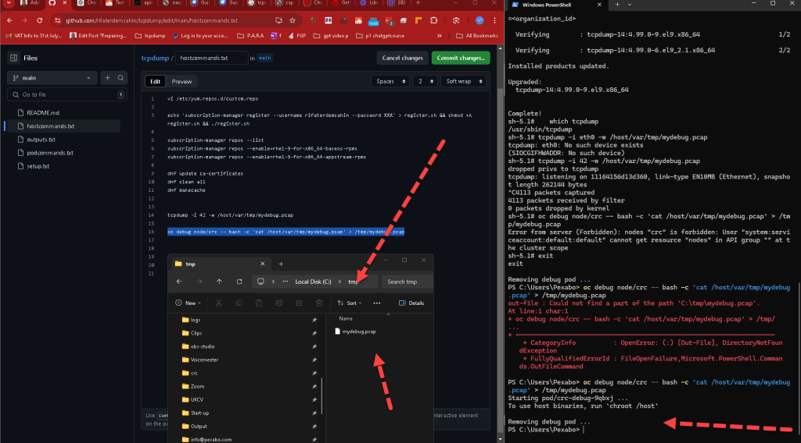
6. Copy the .pcap File to a Secure Location and Share
Finally, transfer the .pcap file to a secure location on your network where it can be safely stored and shared with the requestor or team members for further analysis.
Important Tips:
-
Security: Ensure that you handle
.pcapfiles securely, as they can contain sensitive information. -
Permissions: Ensure you have the necessary permissions to run
tcpdumpon the worker nodes and to copy files back to the jump host. -
Cleanup: After capturing the data, remember to clean up any temporary files created on the worker nodes.
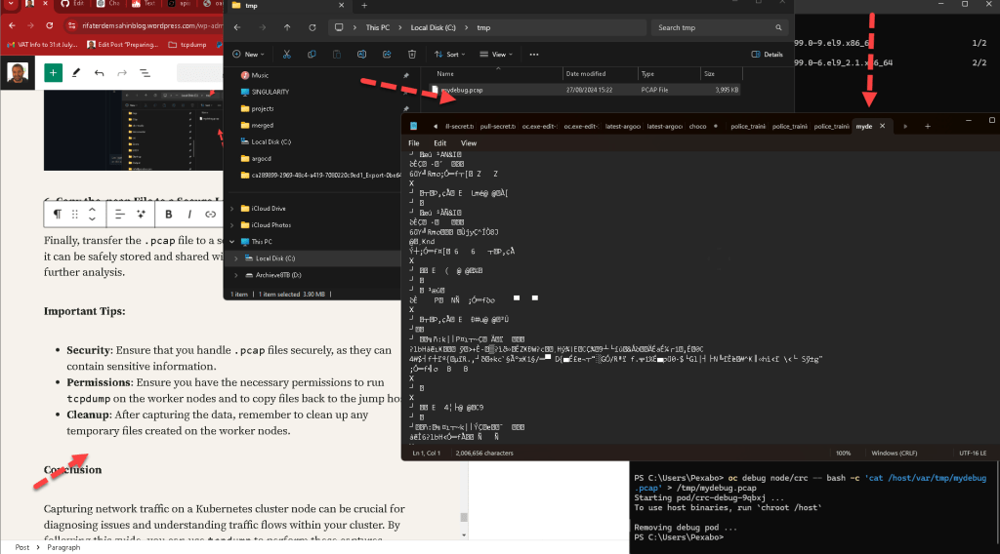
Conclusion
Capturing network traffic on a Kubernetes cluster node can be crucial for diagnosing issues and understanding traffic flows within your cluster. By following this guide, you can use tcpdump to perform these captures effectively and securely. This proof of concept is a powerful example of how traditional network tools can still play a vital role in modern, containerized environments.
Remember, network diagnostics is as much about understanding the tools at your disposal as it is about understanding the environment in which you are working. With this knowledge, you can be well-prepared to tackle any network issue that comes your way.
Happy troubleshooting!
References
https://github.com/rifaterdemsahin/tcpdump/tree/main
To read and analyze a tcpdump capture file (which is typically saved with a .pcap extension), you have several options depending on your preferred environment (command-line or graphical interface). Below are the steps to read and analyze a tcpdump file using different tools.
1. Using tcpdump Command-Line Tool
You can use the tcpdump command itself to read a .pcap file and display its contents in a human-readable format.
Basic Command to Read a tcpdump File:
tcpdump -r /path/to/mydebug.pcap
-r: Specifies the file to read.
Filtering Specific Data:
You can also apply filters when reading the file to narrow down the output:
- Filter by IP address:
tcpdump -r /path/to/mydebug.pcap host 192.168.1.1
- Filter by protocol (e.g., TCP, UDP, ICMP):
tcpdump -r /path/to/mydebug.pcap tcp
- Filter by port:
tcpdump -r /path/to/mydebug.pcap port 80
- Read with more detailed output:
tcpdump -r /path/to/mydebug.pcap -vvv
-vvv: Provides very verbose output, including additional details about packets.
2. Using tshark (Command-Line Tool)
Tshark is the command-line version of Wireshark and provides a powerful way to analyze packet captures.
Basic Command to Read a tcpdump File:
tshark -r /path/to/mydebug.pcap
-r: Specifies the file to read.
Filtering Specific Data with tshark:
You can apply filters similar to tcpdump:
- Filter by IP address:
tshark -r /path/to/mydebug.pcap -Y "ip.addr == 192.168.1.1"
- Filter by protocol (e.g., TCP, UDP, ICMP):
tshark -r /path/to/mydebug.pcap -Y "tcp"
- Display specific fields:
tshark -r /path/to/mydebug.pcap -T fields -e ip.src -e ip.dst -e tcp.port
-
-T fields: Specifies output format to be fields. -
-e: Specifies the fields to display.
3. Using Wireshark (Graphical Tool)
Wireshark is a popular graphical tool for analyzing tcpdump files.
Steps to Read a tcpdump File in Wireshark:
-
Install Wireshark: If not already installed, download and install Wireshark from Wireshark's official website.
-
Open Wireshark: Launch the Wireshark application.
-
Open the
tcpdumpFile: -
Go to File > Open.
-
Navigate to the location of your
.pcapfile and select it. -
Analyze the Capture:
-
Use Wireshark's GUI to filter, inspect, and analyze packets. The filter bar allows for complex filter expressions like
ip.addr == 192.168.1.1 && tcp.port == 80.
4. Using Other Tools
tcpflow: A tool that can be used to reconstruct TCP sessions.
tcpflow -r /path/to/mydebug.pcap
ngrep: A tool that works likegrepfor network traffic.
ngrep -I /path/to/mydebug.pcap
Summary
To read a tcpdump file, you can use either command-line tools like tcpdump or tshark or graphical tools like Wireshark. Each tool offers different levels of detail and ease of use, so choose the one that best fits your needs. If you want to do in-depth analysis, Wireshark is highly recommended due to its comprehensive GUI and feature set.
To read and analyze a tcpdump file (.pcap file) on a Windows system using PowerShell, you have several options. While the tcpdump command-line tool is typically used in Linux environments, there are alternatives for Windows that can read .pcap files.
1. Using Wireshark GUI
Wireshark is a powerful and widely-used network protocol analyzer available for Windows. Here's how you can use it:
Steps to Install and Use Wireshark:
-
Download and Install Wireshark:
-
Go to Wireshark's official website.
-
Download the installer for Windows.
-
Run the installer and follow the setup instructions.
-
Open the
tcpdumpFile: -
Open Wireshark from the Start Menu.
-
Go to File > Open.
-
Browse to the location of your
.pcapfile and open it. -
Analyze the Capture:
-
Use Wireshark’s GUI to filter, inspect, and analyze packets.
-
Use the filter bar to enter display filters, such as
ip.addr == 192.168.1.1 && tcp.port == 80.
2. Using PowerShell with tshark (Command-Line Tool)
Tshark is the command-line version of Wireshark and can be used directly from PowerShell.
Steps to Install and Use tshark:
-
Install Wireshark and Include Tshark:
-
During the Wireshark installation process, make sure to select the option to install Tshark as well.
-
Add Wireshark to Your System Path:
-
To run
tsharkfrom PowerShell, the Wireshark installation directory (e.g.,C:\Program Files\Wireshark) needs to be added to the system’s PATH environment variable. -
You can add it temporarily in your current PowerShell session with:
powershell $env:Path += ";C:\Program Files\Wireshark" -
Use
tsharkto Read thetcpdumpFile: -
Open PowerShell and run the following command to read the
.pcapfile:
tshark -r "C:\path\to\mydebug.pcap"
-
-r: Specifies the file to read. -
Apply Filters and View Specific Data:
-
Filter by IP address:
powershell tshark -r "C:\path\to\mydebug.pcap" -Y "ip.addr == 192.168.1.1" -
Filter by protocol:
powershell tshark -r "C:\path\to\mydebug.pcap" -Y "tcp" -
Display specific fields:
powershell tshark -r "C:\path\to\mydebug.pcap" -T fields -e ip.src -e ip.dst -e tcp.port
3. Using Windows Subsystem for Linux (WSL)
If you have the Windows Subsystem for Linux (WSL) installed, you can use Linux commands like tcpdump or tshark directly in the WSL environment.
Steps to Use WSL:
-
Install WSL:
-
Install WSL if you haven’t already. Run the following command in PowerShell:
powershell wsl --install -
You might need to restart your computer after installing.
-
Install
tcpdumportsharkin WSL: -
Open WSL by typing
wslin PowerShell or Command Prompt. -
Install
tcpdumportsharkin your WSL environment:
bash sudo apt update sudo apt install tshark
or
bash sudo apt install tcpdump -
Read the
tcpdumpFile in WSL: -
Use the same Linux commands in WSL as you would in a native Linux environment:
tshark -r /mnt/c/path/to/mydebug.pcap
or
tcpdump -r /mnt/c/path/to/mydebug.pcap
Summary
-
Wireshark: The easiest and most powerful tool with a GUI interface for analyzing
.pcapfiles. -
Tshark: A command-line alternative to Wireshark that can be used directly from PowerShell.
-
WSL: Allows using Linux tools like
tcpdumpandtsharkdirectly on Windows.
Choose the method that best fits your needs and technical comfort level.
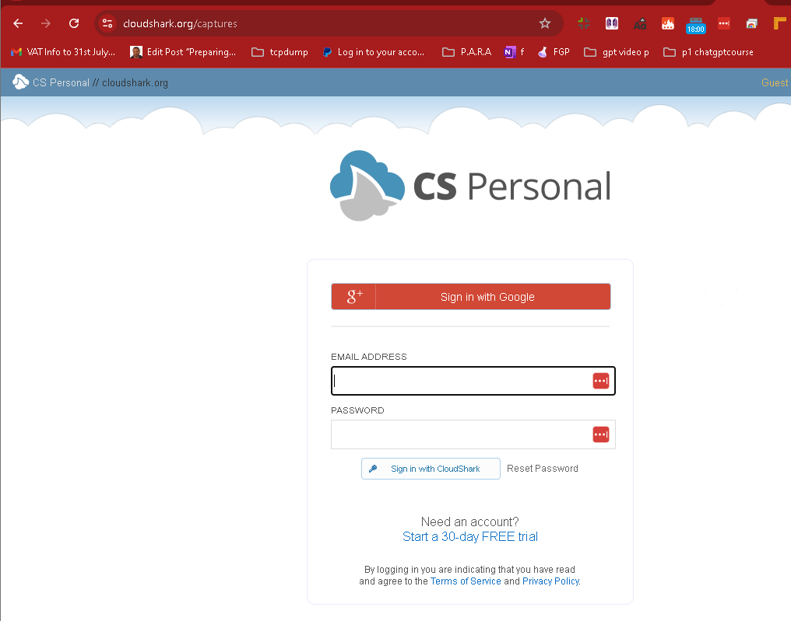
To read and analyze a tcpdump file (.pcap file) online, you can use several web-based tools that allow you to upload and examine network captures without needing to install any software on your local machine. Here are some popular online services that can help you read and analyze pcap files:
1. Netresec NetworkMiner
Netresec NetworkMiner offers an online service where you can upload .pcap files for analysis. It is particularly useful for extracting files and metadata from network captures.
-
Website: Netresec NetworkMiner Online
-
Steps:
-
Visit the website and find the upload section.
-
Upload your
.pcapfile. -
View the analysis results, including extracted files, sessions, and other data.
2. CloudShark
CloudShark is an online tool that allows you to analyze packet capture files directly in your web browser. It offers a user-friendly interface similar to Wireshark and supports various protocols and filters.
-
Website: CloudShark
-
Steps:
-
Go to the CloudShark website.
-
Click on Upload a Capture File.
-
Select your
.pcapfile to upload and analyze. -
Use the web interface to apply filters, inspect packets, and analyze the capture. Note: CloudShark requires an account for regular usage and offers both free and paid plans.
3. PcapXray
PcapXray is an online tool designed to visualize network traffic in a more comprehensible manner. It creates a diagram that shows the relationships and traffic between different IP addresses in your capture file.
-
Website: PcapXray
-
Steps:
-
Visit the PcapXray website.
-
Upload your
.pcapfile using the provided upload option. -
Visualize the network traffic and explore different layers and connections.
4. PacketTotal
PacketTotal is a free service that provides automated analysis of .pcap files. It runs multiple network analysis tools on the uploaded file to provide a comprehensive overview of its contents.
-
Website: PacketTotal
-
Steps:
-
Go to the PacketTotal website.
-
Click on the Upload button to select your
.pcapfile. -
Wait for the analysis to complete, and then review the detailed results provided on the website.
5. PCAP Analyzer
PCAP Analyzer is another simple tool for analyzing .pcap files online. It provides a basic interface for examining packet details and is easy to use.
-
Website: PCAP Analyzer
-
Steps:
-
Open the PCAP Analyzer website.
-
Click on Upload and select your
.pcapfile. -
Browse through the packets and use filters to analyze the data.
Summary
Using online tools to read and analyze .pcap files is a convenient option when you don’t have local software installed or want to quickly share files for collaborative analysis. Each tool offers different features, so you can choose the one that best fits your needs:
-
CloudShark and PacketTotal are excellent for comprehensive analysis and filtering.
-
Netresec NetworkMiner and PcapXray provide specialized features like file extraction and traffic visualization.
-
PCAP Analyzer is great for quick, basic analyses.
Be mindful of privacy and security when uploading sensitive data to online services. Always review the privacy policies of these services to ensure they meet your security requirements.
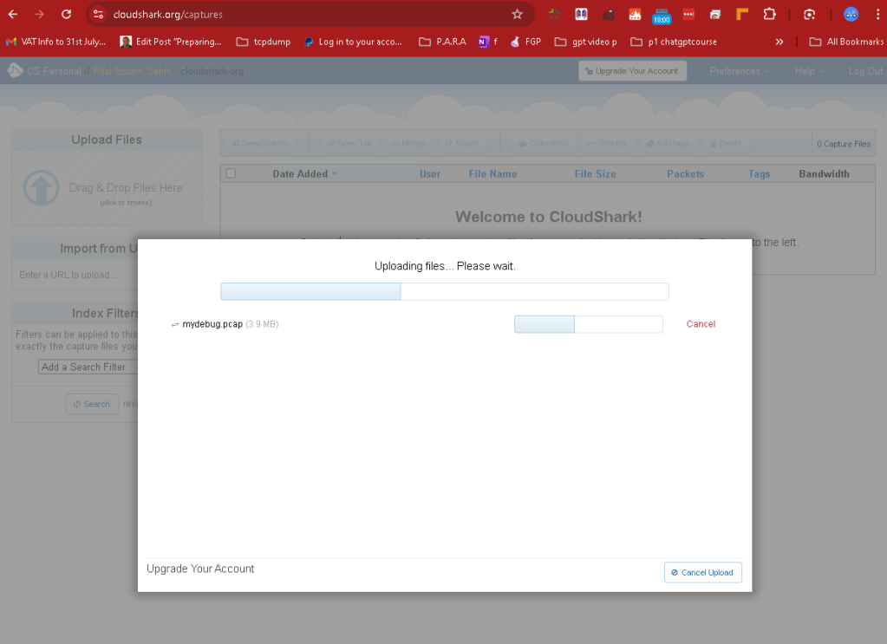
https://www.cloudshark.org/captures
PCAP stands for Packet Capture. It refers to the format used to save network traffic data that is captured over a network. A PCAP file contains the raw data of network packets and is typically used by network analysis tools, like Wireshark, tcpdump, and others, to analyze network traffic for troubleshooting, monitoring, and security purposes.
The .pcap file format allows for the recording and playback of network traffic, making it a valuable tool for network administrators and security professionals.
crc might not be so codeready
The error message in the screenshot indicates that the file you are trying to upload or analyze, mydebug.pcap, is not recognized as the correct file type. The accepted file types are .pcap and .pcapng.
Here are a few steps to address the issue:
1. Verify the File Extension
Ensure that your file has the correct extension (.pcap or .pcapng). Sometimes, files may have a different extension, or there could be hidden characters causing issues.
To rename your file to the correct extension in Linux or using the command line:
mv /host/var/tmp/mydebug.pcap /host/var/tmp/mydebug.pcapng
Or in PowerShell (on Windows):
Rename-Item "C:\path\to\mydebug.pcap" "mydebug.pcapng"
2. Check File Integrity
Ensure the file is not corrupted. Try opening the file in Wireshark or another packet analysis tool to check if the file can be read correctly.
3. Convert the File Format
If the file extension is correct, but the file is still not recognized, you may need to convert the file format. You can use editcap, a tool that comes with Wireshark, to convert the file to .pcapng:
editcap -F pcapng /host/var/tmp/mydebug.pcap /host/var/tmp/mydebug.pcapng
4. Retry the Upload or Analysis
After confirming the file type and integrity, try uploading or analyzing the file again using your online tool or preferred method.
5. Ensure Proper Access Rights
If you are getting an error like Error from server when attempting to read the file from a container or remote host, ensure that:
-
You have the correct permissions to access the file.
-
You are using the correct path.
-
The server or container has the correct network and filesystem permissions.
If you need further assistance or encounter another issue, please let me know!
choco install wireshark
Direct install > https://www.wireshark.org/download.html
pcap is getting installed
References
https://docs.redhat.com/en/documentation/red_hat_codeready_containers/1.15/html/getting_started_guide/using-codeready-containers_gsg#deploying-sample-application-with-odo_gsg
more drivers getting installed
Openshift way inside the pod
https://access.redhat.com/solutions/4569211
Approval for all
redo
ctrl c is fine
To exit tcpdump, you can use the following keyboard shortcuts depending on your environment:
-
Ctrl + C: This is the most common way to stop
tcpdump. Simply press theCtrlkey and theCkey at the same time. This will terminate thetcpdumpprocess and return you to the command prompt. -
Stop a Background Process: If you started
tcpdumpin the background (using&at the end of the command) or usednohup, you can stop it by first bringing it to the foreground using thefgcommand, and then pressingCtrl + C. Alternatively, you can use thekillcommand followed by the process ID (PID) oftcpdump:
kill
To find the PID of tcpdump, use:
ps aux | grep tcpdump
This command will list the processes related to tcpdump, and you can identify the correct PID to kill.
Let me know if you need further assistance!
not so fast outside
The command you've provided:
oc debug node/
is used to copy a file from a worker node in an OpenShift environment to your local machine. However, if the resulting file becomes corrupted, it's likely due to the method used for copying, especially in how the file's output is being handled. Here are a few possible reasons for the corruption and ways to avoid it:
1. Output Redirection in Shell
The > operator in shell scripts will copy the contents of the command into a file. If there are any unexpected outputs or errors, they might get mixed into the file, leading to corruption.
2. Binary vs. Text Transfer
When dealing with binary files like .pcap files, using tools that are not binary-safe can cause corruption. The cat command, while generally safe, might not handle special binary characters correctly if not used carefully.
3. Environment Differences
If the file is being transferred between different environments (e.g., different operating systems or file systems), there could be issues related to encoding or end-of-line characters.
How to Safely Copy Binary Files:
To avoid these issues, try using a more reliable method for copying binary files:
- Use
oc rsyncCommand:
Theoc rsynccommand is designed for copying files to and from containers or pods and handles binary files safely. The equivalent command would look like this:
oc rsync node/crc:/host/var/tmp/mydebug2.pcap /tmp/
oc rsync node/
- Base64 Encoding/Decoding:
Ifoc rsyncis not an option and you need to use theoc debugmethod, you can base64 encode the file before copying, which ensures that binary data is safely transferred. To encode and transfer:
oc debug node/
To decode on your local machine:
base64 -d /tmp/
-
Use
scpthroughoc debug:
If SSH access is available and set up between your nodes, you can also usescpwithin anoc debugsession. This requires SSH keys to be properly configured. -
Check for Errors:
Make sure there are no unexpected outputs or errors when using these commands. Sometimes, a corrupted file might include text from error messages.
By using one of these methods, you should be able to safely transfer your .pcap file without corruption.
The error message you're encountering, "arguments in resource/name form may not have more than one slash," indicates that the oc command expects a different format or that the command is being misinterpreted.
Let's break down the issues and correct the command:
Correct Usage for oc rsync and oc debug
-
oc debugUsage:
Theoc debugcommand is used to start a debug pod on a specific node. The formatnode/<worker_node>should be correct, but make sure you're using the node's actual name. -
oc rsyncUsage:
Theoc rsynccommand is used to copy files between your local machine and a pod or container within OpenShift, not directly between your local machine and a node. This is why you're encountering errors when trying to useoc rsyncin combination withoc debugthis way.
Correct Approach to Copy Files from Node to Local Machine
To copy files from a node (e.g., /host/var/tmp/mydebug2.pcap) to your local machine, you should first enter the debug session on the node using oc debug and then use traditional tools like scp or even output the file through a base64 encoding if scp is not available.
Here’s how you can do it:
Step-by-Step Instructions
- Start a Debug Session on the Node:
oc debug node/
oc debug node/crc -- chroot /host
Replace <worker_node> with your actual node name (e.g., crc).
-
Once in the Debug Pod:
Now that you're inside the node, you can copy the file to your local machine using a method that avoids directrsynccalls. Option 1: Usingbase64to Transfer the File: -
Encode the file and print it to the screen, capturing the output:
base64 /var/tmp/mydebug2.pcap
- On your local machine, redirect this output to a file:
oc debug node/<worker_node> -- chroot /host bash -c "base64 /var/tmp/mydebug2.pcap" > /tmp/mydebug2.b64
-
Decode it locally:
base64 -d /tmp/mydebug2.b64 > /tmp/mydebug2.pcapOption 2: Direct Copy Usingscp: Ifscpis available and SSH keys are set up, you couldscpdirectly: -
Inside the debug pod, use:
scp /var/tmp/mydebug2.pcap user@yourlocalmachine:/path/to/destinationThis method requires SSH access from the OpenShift node to your local machine, which might require SSH key setup and opening appropriate network routes.
Correct oc rsync Command Usage
The oc rsync command is used like this:
oc rsync
Where:
-
<source_path>can be a directory inside a pod or a local directory. -
<destination_path>can be a local directory or a path inside a pod.
It is not meant for copying files directly from nodes to the local machine.
Example Usage of oc rsync:
To copy files from a pod:
oc rsync
Replace <pod-name>, /path/in/pod, and /path/on/local with the appropriate values.
If you need more help or have more questions, feel free to ask!
one liner
Here's a one-liner PowerShell command to decode a Base64 encoded file into a binary file:
Replace "C:\tmp\mydebug2.b64" with the path to your Base64 encoded file, and "C:\tmp\mydebug2.pcap" with the desired output path for your decoded binary file. This command reads the Base64 content, decodes it, and writes it directly to a binary file.
Happiness
Vertical Screen
Gonus gpt40 to analyse
Visualise
GPT Ask you to analyse on your local
It looks like pyshark is also not available in this environment. Since I can't directly analyze the .pcap file here, you will need to perform the analysis on your local machine.
How to Analyze the .pcap File on Your Local Machine
Here's a step-by-step guide using Python and Scapy, as mentioned earlier. If you have Python installed, follow these instructions:
Step 1: Install Necessary Libraries
Open your terminal or command prompt and run the following commands to install Scapy:
pip install scapy
Step 2: Run the Analysis Script
Copy and paste the following Python script into a file (e.g., analyze_pcap.py):
from scapy.all import PcapReader
from collections import Counter
Load the pcap file
pcap_file_path = 'path_to_your_file/mydebug2.pcap' # Update with your file path
Read the pcap file using PcapReader to handle large files efficiently
packets = PcapReader(pcap_file_path)
Initialize counters and lists for analysis
total_packets = 0
ip_counter = Counter()
protocol_counter = Counter()
http_requests = []
Parse each packet
for packet in packets:
total_packets += 1
# Check for IP layer
if packet.haslayer('IP'):
ip_src = packet['IP'].src
ip_dst = packet['IP'].dst
# Count source and destination IPs
ip_counter[ip_src] += 1
ip_counter[ip_dst] += 1
# Check for Protocol layer
proto = packet['IP'].proto
protocol_counter[proto] += 1
# Check for HTTP layer
if packet.haslayer('TCP') and (packet.dport == 80 or packet.sport == 80):
if packet.haslayer('Raw'):
http_payload = packet['Raw'].load.decode(errors='ignore')
if 'HTTP' in http_payload:
http_requests.append(http_payload)
Close the packet reader
packets.close()
Extract the top talkers (most active IPs)
top_talkers = ip_counter.most_common(10)
Extract protocol breakdown
protocol_breakdown = protocol_counter.most_common()
Convert protocols to human-readable names
protocol_map = {1: 'ICMP', 6: 'TCP', 17: 'UDP'}
protocol_breakdown_readable = [(protocol_map.get(proto, f'Unknown ({proto})'), count) for proto, count in protocol_breakdown]
Display results
print("Total Packets:", total_packets)
print("Top Talkers (IPs):", top_talkers)
print("Protocol Breakdown:", protocol_breakdown_readable)
print("Sample HTTP Requests:", http_requests[:5]) # Display first 5 HTTP requests
Step 3: Execute the Script
Replace path_to_your_file/mydebug2.pcap with the actual path to your .pcap file. Save the script and run it with:
python analyze_pcap.py
This will output the total number of packets, the most active IP addresses, a breakdown of protocols, and a sample of HTTP requests, if present.
If you need further assistance, please let me know!
Imported from rifaterdemsahin.com · 2024